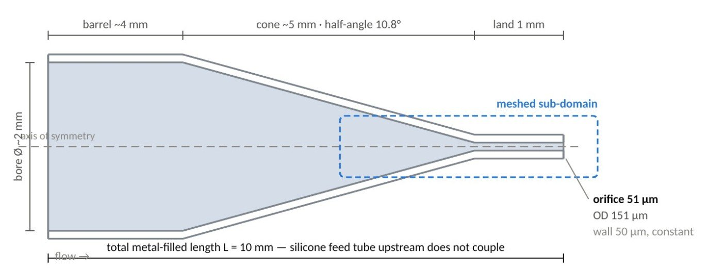
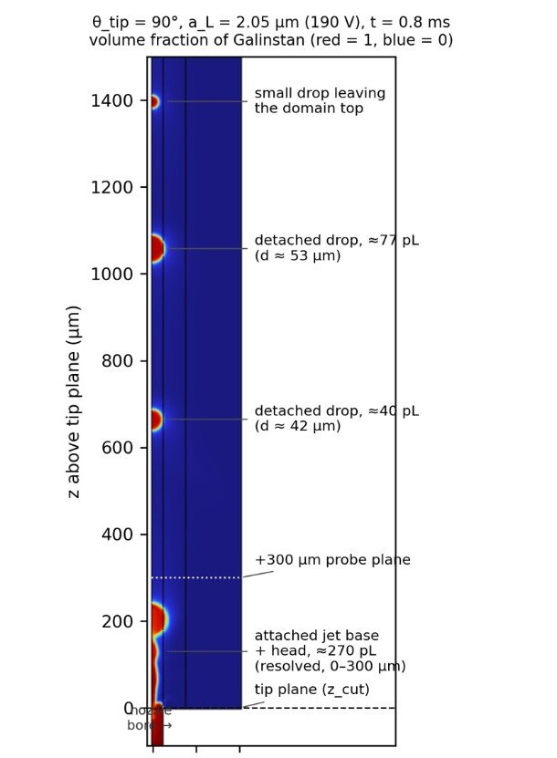

Project 5 · Current work · simulation
Liquid-Metal Printhead CFD
Additive Manufacturing & 4D Printing Lab · Dr. Yiwei Han · COMSOL Multiphysics 6.4
Outcome
The lab's NSF-funded printhead pushes liquid metal through a 51 µm vibrating nozzle, but how far the nozzle tip moves had never been measured. I found it with two-phase CFD: 431 nm at 40 V, from an 18-case sweep. I then modeled when the metal starts breaking into drops: between a 1 and 2.05 µm amplitude.
Skills
- COMSOL two-phase CFD (laminar flow + phase field)
- Calibrating a model against published data
- Parameter sweeps (18 + 5 cases)
- Checking results with hand calculations
Details
| Model | 2D axisymmetric, 26,930 elements |
| Limits | A model prediction, not a measurement |
A hand calculation gave 113 nm, 3.8× too low, which is why full CFD was needed. Next step: check with the lab's interferometer at 40 V.


